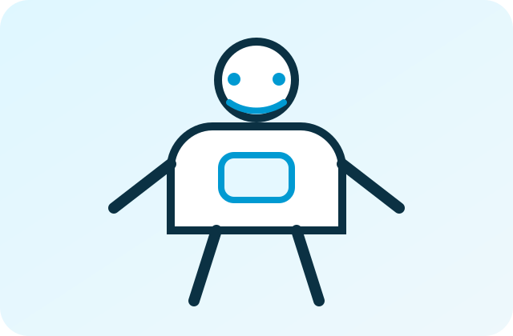

AGIBOT / MOBILE MANIPULATION
AgiBot G2
移動、双腕操作、力制御を組み合わせ、研究・産業PoCに展開する移動操作ロボット。

SUITABLE USES
適した研究・用途。
双腕操作・力制御
把持、持ち替え、両手協調、接触を伴う操作研究。
VLA・模倣学習
遠隔操作とデータ収集を組み合わせた学習基盤。
人協働・サービス研究
人との共同作業、HRI、案内、移動サービス研究。
企業PoC
現場タスク、KPI、安全条件、介入率を定義して評価。
CHECK POINTS
正式見積前の確認項目。
| 身体構成 | 腕、ハンド、自由度、可搬、移動方式、センサーを確認。 |
|---|---|
| 価格 | 本体、末端、オプション、輸送、設定、PoC費用を分離。 |
| 納期 | 構成、在庫、輸送、日本向け条件により確認。 |
| SDK・API | 対象型番、制御レイヤー、通信、OS、外部機器連携を確認。 |
| 運用環境 | 床面、通路幅、ネットワーク、充電、安全距離を確認。 |
| 保証・保守 | メーカー保証とAirAdmin8の一次切り分け・導入支援を分離。 |
| 最終確認日 | 2026年7月16日。公開情報と提供条件は案件ごとに再確認。 |
RELATED INFORMATION
関連する支援・資料。
デモ映像の能力と標準提供機能、個別開発後の能力は分けて確認します。PoC範囲と追加開発を正式見積前に明示します。